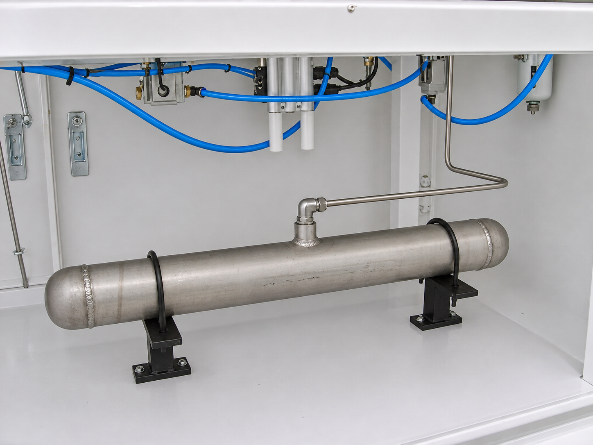

BUFFER TANK
고압 및 저압 버퍼탱크
용도
- 압력원과 사용처 사이에서 매체를 일시 저장해 공급 변동 완화
- 사용량과 허용 압력 범위에 따라 용적 선정
- 고압 소형 압력용기: 사용압력 1~100 MPa 범위에서 지정 압력과 적용 안전 기준에 맞춰 제작
- 요청 기준에 따른 벽두께 계산 및 필요 시 유한요소해석(FEM)
- 수소용 제품: 사용 조건에 따라 SUS 316L, 내경 150 mm 이하 적용 가능
- 특정설비: 「고압가스 안전관리법 시행규칙」 별표 12에 따른 제조·검사 기준 적용


MANUAL PRESSURIZATION
수동가압설비
용도
- 핸드펌프를 직접 조작해 시험 회로 가압
- 시험체 용적과 펌프 사양으로 필요 압력·매체량 확보 여부 검토
- 압력·온도 측정장비 추가 시 데이터베이스에 측정값 자동 저장


PROOF TEST
내압시험설비
용도
- 고압제품의 안전성 검증
- 제품의 탄성 영역 내에서 물 등의 유체로 시험압력까지 가압
- 적용 규격에 따라 변형·누설 평가

LEAK TEST
기밀시험설비
용도
- 제품에 사용되는 가스로 누설 여부 확인
- 요구 감도와 검출 대상에 따라 압력강하법·기포법 등 선택

BURST TEST
파열시험 챔버
용도
- 시험체 파손 시 파열압력과 파손 위치 평가
- 시험체 사양에 따른 시험 조건 및 비교 기준 적용
- 국내외 기준과 최대 파열압력을 고려해 챔버의 구조 계산·해석 후 제작

STRUCTURAL ANALYSIS
안전 구조 계산 및 해석
검토 범위
- 실린더형 탱크·안전 챔버의 강도와 변형 계산
- 지지 프레임·체결부 등 형상이나 하중 조건이 복잡한 부분은 구조해석으로 안전성 검토


검토에 필요한 자료
- 기본 자료
- 설비 도면, 재질, 시험체 형상, 시험압력 및 시험 매체
- 검토 조건
- 설치 및 지지 조건, 하중 조건, 적용 규격과 허용 기준
- 결과 항목
- 응력 및 변형 평가, 검토 가정과 적용 범위
PRESSURE TESTING SERVICE
압력의뢰시험
- 시험 대상: 소형 밸브·피팅·용기 등 고압제품
- 시험항목: 내압 기밀 파열 및 반복 시험 등
- 시험체 사양과 요구 조건에 따라 시험 가능 여부·방법·결과 제공 범위 협의
- TÜV·SGS 등을 통한 공인 시험 성적서 발행 가능
문의 시 필요한 정보
- 시험체 정보
- 품목, 수량, 도면 또는 주요 치수, 연결 규격
- 시험 조건
- 시험 목적, 목표 압력, 시험 매체, 적용 규격과 합격 기준
- 결과 및 일정
- 필요한 결과 기록 또는 성적서 형식, 희망 일정
CONTACT
설비 사양 및 제작 문의
- 메일 기재 항목: 설비명, 시험 대상, 목표 압력, 세부 사항